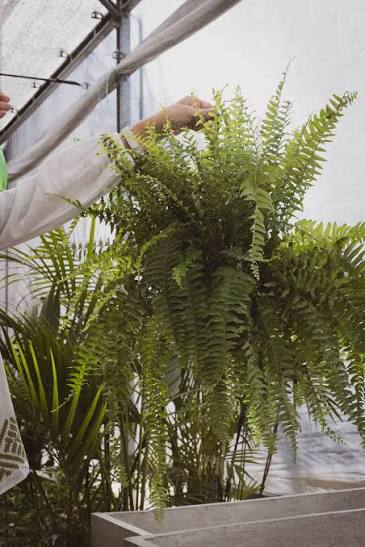
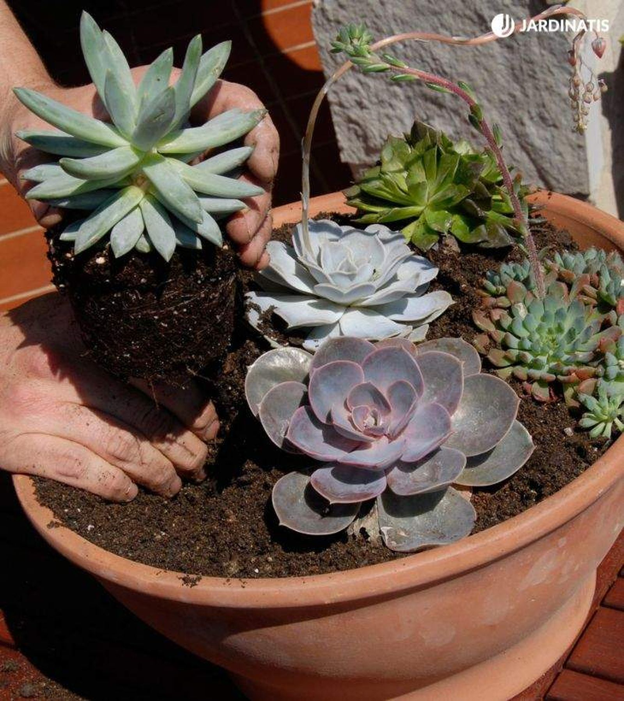
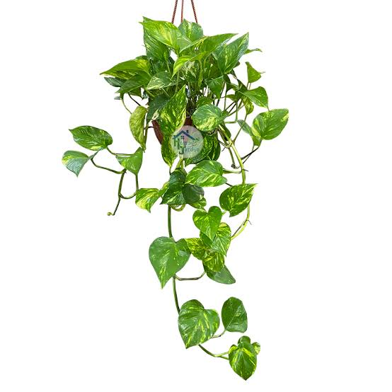
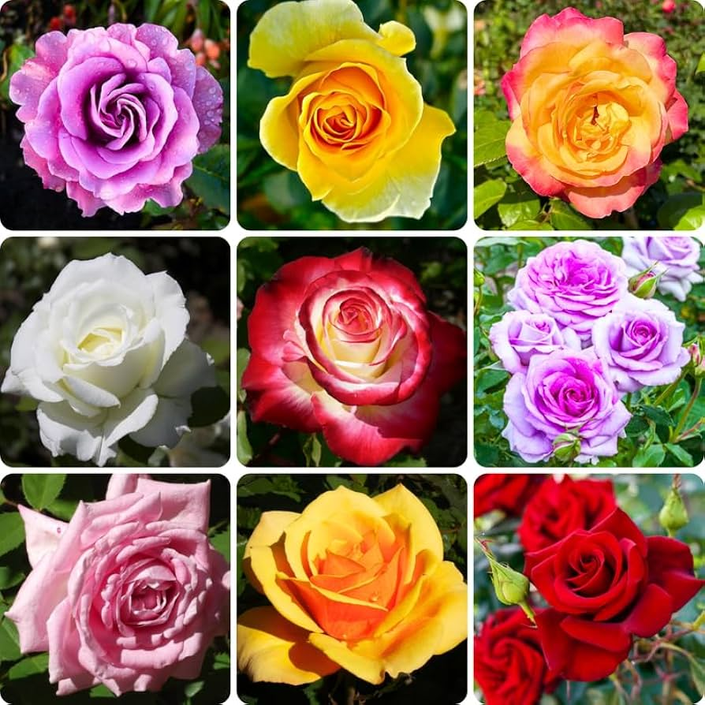

Helecho de Boston
el toque verde y exótico para tu hogar. Ideal para colgar en cestas o lucir en estanterías altas, esta planta purificadora destaca por sus frondosas hojas arqueadas que llenan de vida cualquier rincón. Para mantener su frescura, colócalo en un espacio con luz indirecta brillante y asegúrate de regarlo regularmente para que su sustrato permanezca húmedo.

Suculenta
La planta de diseño perfecta para principiantes. Ideal para escritorios, repisas y espacios modernos, esta joya natural destaca por sus hojas geométricas que almacenan agua de forma eficiente. Para que luzca espectacular, solo necesita un rincón muy luminoso, sol directo controlado y riegos mínimos cuando el sustrato esté completamente seco.

Potus
La planta colgante irresistible y fácil de cuidar. Perfecta para estanterías altas y espacios interiores con poca luz, esta variedad purificadora destaca por sus hojas en forma de corazón y sus largas cascadas verdes llenas de vida. Es una planta sumamente resistente que tolera la falta de riego y se adapta con éxito a casi cualquier rincón de tu hogar.

Precio: $22,500
Ver más info.Jazmin
Aroma inconfundible y belleza silvestre para tu espacio. Perfecta para trepar por paredes de patios, balcones soleados o pérgolas, esta planta destaca por sus delicadas flores blancas de fragancia intensa y seductora. Para disfrutar al máximo de su floración, necesita exposición a sol directo o semisombra, junto con un riego regular que mantenga la tierra ligeramente húmeda.

Rosas
La reina del jardín con flores espectaculares y clásicas. Ideal para llenar de color y elegancia tus terrazas, patios y jardines soleados, esta planta destaca por su floración continua y su inigualable atractivo visual. Para que crezca fuerte y florezca con fuerza, necesita un espacio con abundante sol directo, un riego profundo pero moderado y una poda anual que estimule sus brotes.
